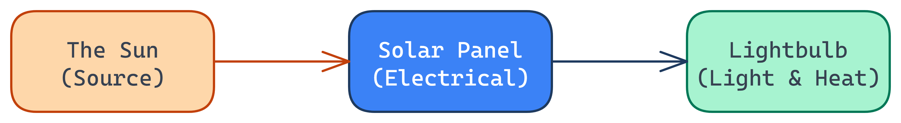

Look at the city at night. The lights are glowing, cars are moving, and homes are heated.
Where does all this energy actually come from?
Hook the students. Ask them to think about what powers the lights, the cars, the buildings.
Where the energy is stored or where it comes from originally.
How we observe the energy doing work or moving.
Emphasise the distinction using the bolded words. A source *stores* it. A form is what it *does*.
Use the battery example: A battery is a physical thing storing chemical potential (Source). It provides electrical energy (Form).
Write your answer large and hold it up high!
Scan the room. Look specifically for students who write "Form".
If many write "Form", pause and re-explain: "We can't *see* battery energy doing work until we plug it into something. The battery is just a storage container for chemical energy, making it a source."
Tap a card to select it, then tap the correct zone.
Invite students up to the smartboard to categorise the terms.
The system uses two-tier feedback: a shake for the first mistake, and a textual hint for the second.

Energy doesn't disappear; it just changes form!
Walk through this visual chain slowly. Point out how the "Source" (The Sun) leads to an "Electrical Form" (via the panel), which then splits into two forms (Light and Heat).
Look, don't touch! Do not unplug any cords or touch power points.
Briefing for the practical task (TC01). Ensure students understand they are looking for evidence of transformation.
Emphasise the safety rule strongly before letting them move around.